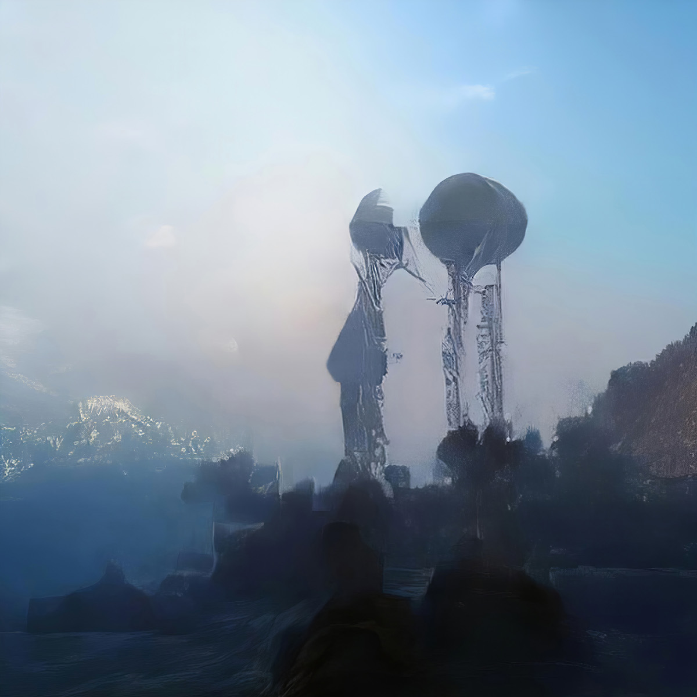

Next seminars:
March 25th, 2019, 12h00-13h00, room Salle Jean Jaurès, 29 rue d’Ulm (sous-sol).
Béatrice Prunel and Gregory Chatonsky (ENS)
Title: Art and artifial imagination
Abstract: Les médias sont aujourd’hui fascinés par les applications des réseaux de neurones dans la création. ils mettent régulièrement en exergue des moments où ces productions artificielles auraient “trompé” les humains et remplacé les artistes. Tout cela semble confirmer que l’IA aurait conquis jusqu’aux derniers remparts de l’humanité : l'intériorité et la créativité. Le dialogue entre une historienne de l’art, investie dans les humanités numériques, et un artiste lui-même familier du deep learning, invite à changer de perspective. Une approche historique et matérialiste permet de mieux distinguer ce qui est nouveau dans l’irruption apparente de l’IA dans les arts et de mieux se saisir de la conception implicite de l’art qui s’y développe : le changement de finalité d’une nouvelle technique, qui génère des résultats surprenants, est aussi une manière de déjouer les présupposés du système économique, et d’en suggérer la critique autant que d’ouvrir de nouveaux possibles.

Grégory Chatonsky est un artiste franco-canadien dont le travail pour sur Internet et l’imagination artificielle. Il a participé à de nombreuses expositions en France, au Canada et à l’étranger dont France Electronique à Toulouse, Terre/mer/signal au Rua Red de Dublin, Imprimer le monde en 2017 au Centre Pompidou, Capture : Submersion en 2016 à Arts Santa Mònica Barcelone, La condition post-photographique à Montréal, Walkers: Hollywood afterlives in art en 2015 au Museum of the Moving Image de New York, Telofossils en 2013 au Musée d’art contemporain de Taipei, Erreur d’impression en 2012 au Jeu de Paume. Il a été en résidence à Abou Dhabi (2017), en Amazonie à Taluen (2017), Colab à Auckland (2016), Hangar à Barcelone (2016), IMAL (2015), Villa Kujoyama (2014), CdA Enghein-les-Bains (2013), MOCA Taipei (2012), 3331 Arts Chiyoda (2012), Xiyitang, Shanghai, (2011), Les Inclassables à Montréal (2003), Abbaye royale de Fontevraud (2002). Il a reçu le prix Audi Talents en 2018 et est résident à la Cité Internationale des Arts de Paris en 2019-2020. Il a fondé en 1994 Incident.net, l’un des premiers collectifs de Netart en France. Il a été professeur-invité au Fresnoy (2004-2005), à l’UQAM (2007-2014), aété récipiendaire d’une chaire internationale de recherche à l’Université de Paris VIII (2015) et poursuit ses recherches à l’Ecole normale supérieure de Paris.
Béatrice Joyeux-Prunel est maître de conférences HDR en histoire de l’art contemporain à l’Ecole normale supérieure de Paris. Elle travaille sur l’histoire des arts dans une perspective mondiale, transnationale et sociologique, tout en coordonnant à l’ENS l’enseignement de l’histoire de l’art contemporain et des humanités numériques. Spécialiste de la mondialisation culturelle, elle s’intéresse également à l’histoire culturelle et visuelle du pétrole, et à l’imaginaire des technologies numériques. Béatrice Joyeux-Prunel a fondé et dirige le projet
ARTL@S. Elle coordonne avec Grégory Chatonsky le projet
Postdigital. Parmi ses publications : Les avant-gardes artistiques – une histoire transnationale 1848-1918, Paris, Gallimard Folio histoire (inédit poche), 2016 ; volume 2 (1918-1945), paru en 2017 ; et volume 3 (1945-1970), à paraître en 2019.